Introduction
Spatial and spatio-temporal data are ubiquitous in modern applications, ranging from environmental monitoring and epidemiology to geostatistics and remote sensing. Modeling such data requires methods that can capture complex spatial dependence structures while remaining computationally tractable for large datasets.
Gaussian random fields with Matérn covariance functions have become the gold standard for spatial modeling due to their flexibility in controlling both the smoothness and range of spatial correlation. However, traditional geostatistical approaches based on likelihood methods scale poorly with sample size, with computational complexity typically where is the number of observations. Moreover, as emphasized by Stein (1999), the Matérn covariance family is particularly appealing for spatial modeling because its smoothness parameter directly controls the differentiability of the field and can be estimated from the data, providing a principled way to capture different levels of spatial smoothness observed in real processes.
The Stochastic Partial Differential Equation (SPDE) approach, introduced by Lindgren et al. (2011), revolutionized spatial statistics by establishing an explicit link between Gaussian fields with Matérn covariance functions and Gaussian Markov random fields (GMRFs) defined through SPDEs. This formulation enables efficient computation via sparse precision matrices and finite element discretization. In the case of two-dimensional domains, the authors noted that computations for GMRFs typically have a cost of about , representing a substantial improvement over the cost of traditional covariance-based methods.
The ngme2 package extends this framework in several important ways:
- Non-Gaussian noise distributions: Supports Normal Inverse Gaussian (NIG) and Generalized Asymmetric Laplace (GAL) distributions for modeling heavy tails, skewness, and jumps in spatial processes
- Flexible model specification: Seamlessly integrates spatial random effects with fixed effects and measurement error
- Computational efficiency: Leverages sparse matrix operations and advanced optimization algorithms
- Non-stationary extensions: Allows spatial variation in correlation parameters
This vignette provides a comprehensive guide to implementing and using Matérn SPDE models within the ngme2 framework, covering model specification, simulation, estimation, prediction, and real-world applications.
Model Specification
Gaussian Matérn Fields
A standard geostatistical model relates observations at spatial locations to an underlying spatial process through:
where:
- is a mean function (often expressed as with basis functions and coefficients )
- is a zero-mean Gaussian random field capturing spatial dependence
- represents independent measurement error
The spatial random field is typically modeled as a Gaussian process:
where is the covariance function specifying the spatial dependence structure.
The Matérn Covariance Function
Among various covariance functions, the Matérn family is particularly valued for its flexibility:
where:
- : marginal variance, controlling overall process variability
- : spatial scale parameter (inversely related to correlation range)
- : smoothness parameter (controls differentiability of realizations)
- : Gamma function
- : Modified Bessel function of the second kind of order
- : Euclidean distance
Key properties:
- Flexibility: Includes exponential covariance () and approximates Gaussian covariance as
- Smoothness control: The parameter directly determines mean-square differentiability; fields are times mean-square differentiable
- Practical range: The effective correlation range (distance where correlation drops to ~0.1) is approximately
- Realistic modeling: Provides more realistic spatial correlation structures than exponential or Gaussian alternatives
Computational Challenges
Traditional maximum likelihood or restricted maximum likelihood estimation for Gaussian Matérn fields requires:
- Computing the covariance matrix with elements for all observation pairs
- Matrix inversion and determinant computation for likelihood evaluation
- Repeated evaluations during optimization
This approach has computational complexity and memory requirements, making it impractical for observations—a common scenario in modern spatial applications.
The SPDE Representation
Connection to Stochastic Partial Differential Equations
The breakthrough insight of Lindgren et al. (2011) builds on classical work by Whittle (1963), which showed that a Gaussian field with Matérn covariance function is formally the solution to the stochastic partial differential equation:
where:
- is the Laplacian operator
- is Gaussian white noise
- where is the spatial dimension
- relates to the correlation range as before
Physical interpretation:
- The operator
represents a balance between:
- Local correlation (through , which penalizes rapid spatial variation)
- Range control (through , which determines decay rate)
- The fractional power determines smoothness
- White noise forcing provides stochastic excitation
Finite Element Discretization
For computational purposes, we must work on a bounded domain and use a finite element approximation. In this setting, we work with approximations of the Gaussian field with Matérn covariance, represented through basis functions defined on a triangulation of . The key steps are:
Triangulation: Partition the domain into non-overlapping intervals (1D) or triangles (2D)
-
Basis functions: Define piecewise linear basis functions on the mesh vertices:
- (Kronecker delta)
- Each is linear within each triangle and continuous across boundaries
- Compact support: is non-zero only in triangles containing vertex
Weak formulation: Approximate the solution as: where are the weights (random field values at mesh vertices)
Galerkin projection: For (corresponding to , the most common case), multiply the SPDE by test functions and integrate:
Testing against each basis function yields:
where:
- is the stiffness matrix
- is the mass matrix:
- is the stiffness matrix:
- with
Since is Gaussian white noise, the weights have distribution:
In practice, we often work with the precision matrix:
which approximates the precision matrix of the Matérn field at the mesh vertices.
Observation Matrix
To link the discretized field to observations at locations , we use a projection matrix :
where are the basis function values at observation locations.
- For observations at mesh vertices: contains rows of the identity matrix
- For observations between vertices: performs barycentric interpolation
- Matrix is sparse: each observation involves only the triangle containing it
The observation model becomes:
where: - : response vector - : design matrix for fixed effects - : fixed effect coefficients - : sparse projection matrix - : spatial random effects - : measurement errors
Non-Gaussian Extensions
Motivation for Non-Gaussian Fields
While Gaussian fields are mathematically tractable and widely used, many spatial phenomena exhibit features that cannot be adequately captured by Gaussian models:
- Heavy tails: Extreme values occur more frequently than predicted by Gaussian distributions
- Asymmetry: Positive and negative excursions from the mean have different behaviors
- Jumps: Sample paths exhibit discontinuities or rapid transitions
- Excess zeros: Point mass at zero combined with continuous distribution
- Multimodality: Multiple centers of concentration
Application examples:
- Environmental data: Precipitation (many zeros, positive skew), pollution spikes
- Resource abundance: Species counts, mineral concentrations
- Financial data: Returns with fat tails and asymmetry
- Epidemiology: Disease incidence with overdispersion
Type-G Lévy Processes
The ngme2 framework generalizes the SPDE approach by replacing Gaussian white noise with Type-G Lévy noise:
where is a Type-G Lévy process.
A Lévy process is Type-G if its increments can be represented as location-scale mixtures:
where:
- denotes the Lebesgue measure of set
- : location parameters
- : scale parameter
- : standard normal
- : mixing variable (positive infinitely divisible)
- and are independent
Key distributions in ngme2:
-
Normal Inverse Gaussian (NIG):
- Mixing:
- Parameters: (asymmetry), (scale), (tail weight)
- Properties: Closed under convolution, semi-heavy tails, flexible skewness
-
Generalized Asymmetric Laplace (GAL):
- Mixing:
- Additional flexibility in tail behavior
- Includes Laplace and asymmetric Laplace as special cases
Finite Element Discretization with Non-Gaussian Noise
Following the same discretization procedure as before, we consider the same setup. More precisely, we consider $V_n = {\rm span}\{\varphi_1,\ldots,\varphi_n\}$, where are piecewise linear basis functions obtained from a triangulation of and we approximate the solution by , where is written in terms of the basis functions as
In the right-hand side we obtain a random vector
where the functional is given by
By considering to be a type-G Lévy process, we obtain that has a joint distribution that is easy to handle.
Therefore, given a vector of independent stochastic variances (in our case, positive infinitely divisible random variables), we obtain that
$$\mathbf{f}|\mathbf{V} \sim N(\gamma + \mu\mathbf{V}, \sigma^2{\rm diag}(\mathbf{V})).$$
So, if we consider, for instance, the non-fractional and non-Gaussian SPDE
we obtain that the FEM weights satisfy
$$\mathbf{w}|\mathbf{V} \sim N(\mathbf{K}^{-1}(\gamma+\mu\mathbf{V}), \sigma^2\mathbf{K}^{-1}{\rm diag}(\mathbf{V})\mathbf{K}^{-1}),$$
where is the discretization of the differential operator.
Computational strategy:
- The mixing variables are treated as latent variables
- Given , the model is conditionally Gaussian (computationally tractable)
- Inference alternates between:
- Updating given (Gaussian sampling)
- Updating given (specific to noise distribution)
This hierarchical structure maintains computational efficiency while enabling flexible non-Gaussian marginal distributions.
Properties of Non-Gaussian Matérn Fields
Covariance structure:
- The covariance function remains Matérn-like in structure
- Controlled by the same parameters and
- Interpretation of range and smoothness carries over
Marginal distributions:
- Non-Gaussian with specified properties (heavy tails, skewness)
- More flexible than Gaussian for modeling extreme events
- Better fit to empirical data in many applications
Sample path properties: - Smoothness still controlled by - Can exhibit jumps (particularly with GAL noise) - Asymmetric behavior possible with appropriate parameter
Implementation in ngme2
Basic Syntax
To specify a Matérn SPDE model in ngme2, use the f()
function with model="matern" within your model formula. The
basic structure is:
f(map, model = "matern", mesh = mesh_object, noise = noise_spec)Key arguments:
-
map: Spatial locations (coordinates) where the field is observed- For 1D: vector of locations
- For 2D: matrix with columns for longitude/latitude or x/y coordinates
model = "matern": Specifies the Matérn SPDE model-
mesh: A mesh object created withfmesher::fm_mesh_1d()(1D) orfmesher::fm_mesh_2d()(2D)- Defines the finite element triangulation
- Controls resolution and approximation accuracy
-
noise: Noise distribution specification-
noise_normal(sigma): Gaussian noise (default) -
noise_nig(mu, sigma, nu): Normal Inverse Gaussian -
noise_gal(...): Generalized Asymmetric Laplace
-
-
kappaortheta_K: Spatial scale parameter- Direct specification:
kappa = 2.0 - Log scale:
theta_K = log(2.0)(used internally) - Estimated from data if not specified
- Direct specification:
When to specify parameters:
-
For simulation: Specify all parameters
(
kappaortheta_K, and noise parameters) to generate realizations - For estimation: Parameters can be omitted; the model will estimate them from observed data
Creating a Simple SPDE Model
Let’s start with a basic example to understand the components:
# 1D example with Gaussian noise
f(
map = 1:10,
model = matern(
mesh = fmesher::fm_mesh_1d(1:10),
kappa = 1
),
noise = noise_normal(sigma = 1)
)
#> Model type: Matern
#> alpha = 2 (fixed)
#> kappa = 1
#> Noise type: NORMAL
#> Noise parameters:
#> sigma = 1
# 1D example with NIG noise
f(
map = 1:10,
model = matern(
mesh = fmesher::fm_mesh_1d(1:10),
kappa = 1
),
noise = noise_nig(mu = 0, sigma = 1, nu = 0.5)
)
#> Model type: Matern
#> alpha = 2 (fixed)
#> kappa = 1
#> Noise type: NIG
#> Noise parameters:
#> mu = 0
#> sigma = 1
#> nu = 0.5These examples demonstrate the basic syntax for specifying SPDE models with different noise distributions.
Simulation
Using SPDE Matérn Model in ngme2
Understanding SPDE model behavior through simulation helps build intuition about spatial correlation, smoothness, and the impact of different noise distributions. We first use the simulation function to generate the data.
Setting Up the Simulation Environment
# Define the domain
library(ggplot2)
library(viridis)
pl01 <- cbind(c(0, 1, 1, 0, 0) * 10, c(0, 0, 1, 1, 0) * 5)
mesh <- fmesher::fm_mesh_2d(
loc.domain = pl01, cutoff = 0.1,
max.edge = c(0.3, 10)
)
n_obs <- 2000
loc <- cbind(runif(n_obs, 0, 10), runif(n_obs, 0, 5))
cat("Mesh vertices:", mesh$n, "\n")
#> Mesh vertices: 2163
cat("Number of observations:", n_obs, "\n")
#> Number of observations: 2000Let’s visualize the mesh structure with observation locations:
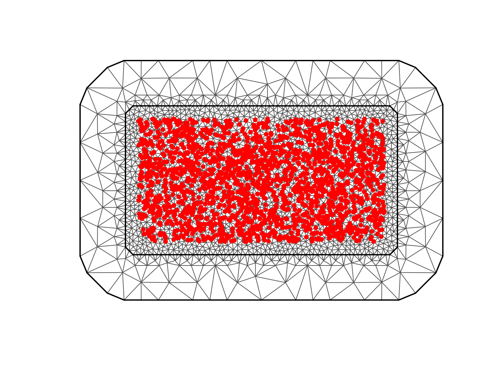
Simulating with NIG Noise
Now we define and simulate from a model with NIG noise:
# Define the simulated model
sigma_true <- 5
nu_true <- 0.5
mu_true <- -2
kappa_true <- 4
true_noise <- noise_nig(
mu = mu_true,
sigma = sigma_true,
nu = nu_true
)
true_model <- f(
map = loc,
model = matern(
mesh = mesh,
kappa = kappa_true
),
noise = true_noise
)
sigma_noise <- 0.1
# Simulate the data
W <- simulate(true_model)[[1]]
Y <- W + rnorm(n_obs, sd = sigma_noise)
# Summary statistics
cat("Simulated field statistics:\n")
#> Simulated field statistics:
cat(" Mean:", round(mean(W), 3), "\n")
#> Mean: 0.027
cat(" SD:", round(sd(W), 3), "\n")
#> SD: 0.31
cat(" Min:", round(min(W), 3), "\n")
#> Min: -2.412
cat(" Max:", round(max(W), 3), "\n")
#> Max: 2.184Visualizing the Simulated Field
# Prepare data for plotting
sim_data <- data.frame(
x = loc[, 1],
y = loc[, 2],
value = W
)
# Create spatial plot
ggplot(sim_data, aes(x = x, y = y, color = value)) +
geom_point(size = 2) +
scale_color_viridis(option = "plasma") +
coord_fixed() +
labs(
title = "Simulated NIG Matérn SPDE Field",
subtitle = paste0(
"κ = ", kappa_true,
", NIG(μ=",
mu_true, ", σ=", sigma_true,
", ν=", nu_true, ")"
),
x = "Longitude",
y = "Latitude",
color = "Field Value"
) +
theme_minimal() +
theme(
plot.title = element_text(size = 13, face = "bold"),
legend.position = "right"
)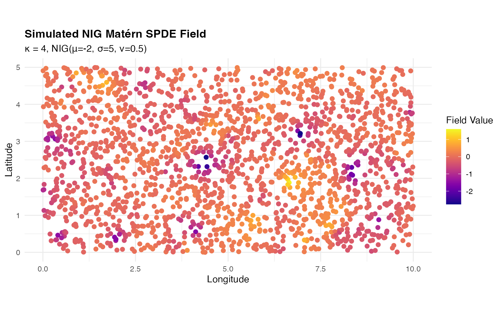
The simulated field shows smooth spatial variation with the characteristic features of NIG innovations, including potential asymmetry and heavier tails than Gaussian.
Estimation
Fitting the Model
Now we fit the model to our simulated data to demonstrate parameter recovery:
out <- ngme(
Y ~ 0 + f(loc,
model = matern(
mesh = mesh
),
name = "spde",
noise = noise_nig(),
),
data = data.frame(Y = Y),
control_opt = control_opt(
iterations = 2000,
optimizer = precond_sgd(),
rao_blackwellization = TRUE,
n_parallel_chain = 4,
std_lim = 0.01
)
)
#> Starting estimation...
#>
#> Starting posterior sampling...
#> Posterior sampling done!
#> Average standard deviation of the posterior W: 0.3619097
#> Note:
#> 1. Use ngme_post_samples(..) to access the posterior samples.
#> 2. Use ngme_result(..) to access different latent models.
# Display results
out
#> *** Ngme object ***
#>
#> Fixed effects:
#> None
#>
#> Models:
#> $spde
#> Model type: Matern
#> alpha = 2 (fixed)
#> kappa = 3.93
#> Noise type: NIG
#> Noise parameters:
#> mu = -1.74
#> sigma = 4.9
#> nu = 0.552
#>
#> Measurement noise:
#> Noise type: NORMAL
#> Noise parameters:
#> sigma = 0.102Model specification explained:
-
Y ~ 0: Response with no intercept -
f(...): Spatial random effect-
name = "spde": Identifier for later reference -
mesh = mesh: Triangulation -
noise = noise_nig(): NIG distribution with estimated parameters
-
Optimization settings:
-
optimizer = precond_sgd(): Preconditioned stochastic gradient descent -
rao_blackwellization = TRUE: Variance reduction -
n_parallel_chain = 4: Multiple chains for robustness
Convergence Diagnostics
# Compare with true parameters
traceplot(out, "spde", hline = c(
kappa_true, mu_true,
sigma_true, nu_true
))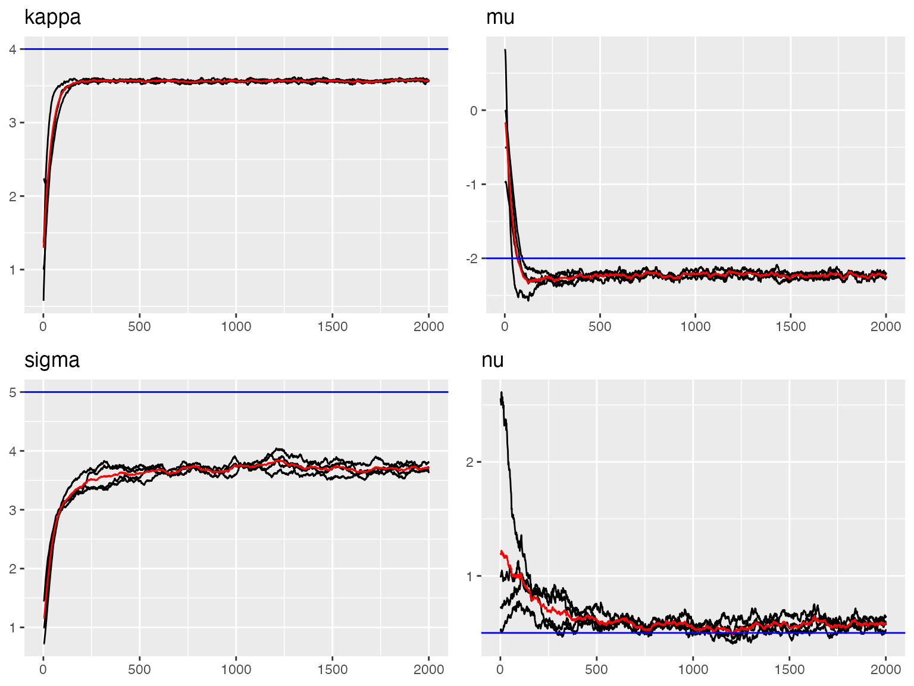
#> Last estimates:
#> $kappa
#> [1] 3.932669
#>
#> $mu
#> [1] -1.746545
#>
#> $sigma
#> [1] 4.866593
#>
#> $nu
#> [1] 0.5719904
# Measurement noise convergence
traceplot(out, hline = sigma_noise)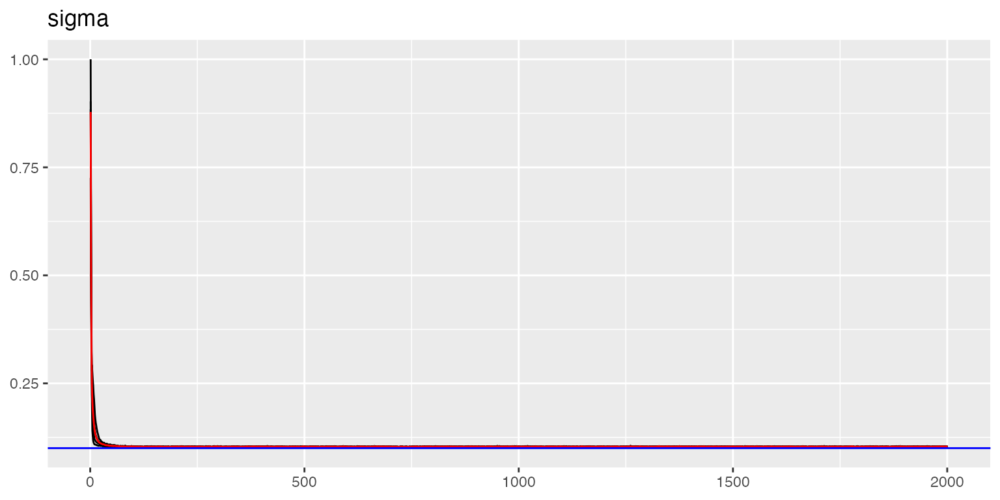
#> Last estimates:
#> $sigma
#> [1] 0.1022236The traceplots show good convergence with estimates oscillating around true values (blue lines).
Model Validation
Compare the estimated noise distribution with the true distribution:
# Compare with true density
plot(
true_noise,
out$replicates[[1]]$models[[1]]$noise
)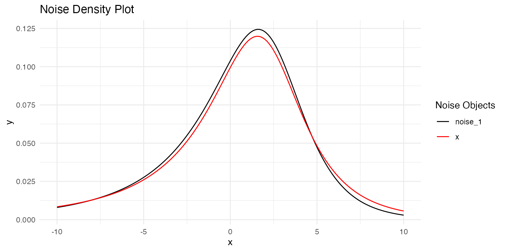
Parameter Recovery
params_spde <- ngme_result(out, "spde")
# True vs estimated comparison
cat("Spatial scale parameter (kappa):\n")
#> Spatial scale parameter (kappa):
cat(" True:", kappa_true, "\n")
#> True: 4
cat(" Estimated:", round(as.numeric(params_spde$kappa), 3), "\n\n")
#> Estimated: 3.934
cat("NIG parameters:\n")
#> NIG parameters:
cat(" mu - True:", mu_true, ", Estimated:", round(as.numeric(params_spde$mu), 3), "\n")
#> mu - True: -2 , Estimated: -1.743
cat(" sigma - True:", sigma_true, ", Estimated:", round(as.numeric(params_spde$sigma), 3), "\n")
#> sigma - True: 5 , Estimated: 4.904
cat(" nu - True:", nu_true, ", Estimated:", round(as.numeric(params_spde$nu), 3), "\n\n")
#> nu - True: 0.5 , Estimated: 0.552
params_data <- ngme_result(out, "data")
cat("Measurement noise (sigma):\n")
#> Measurement noise (sigma):
cat(" True:", sigma_noise, "\n")
#> True: 0.1
cat(" Estimated:", round(as.numeric(params_data$sigma), 3), "\n")
#> Estimated: 0.102The parameter estimates are very close to the true values, demonstrating successful recovery.
Real Data Example: Argo Float Data
To demonstrate the practical application of Matérn SPDE models, we analyze oceanographic data from the Argo float system measuring sea surface temperature and salinity.
Data Exploration
We use the argo_float data to illustrate how to use the
SPDE Matérn model in ngme2:
# Load data
data(argo_float)
head(argo_float)
#> lat lon sal temp
#> 1 -64.078 175.821 -0.0699508100 0.4100305
#> 2 -63.760 162.917 -0.0320931260 -0.2588680
#> 3 -63.732 163.294 -0.0008063143 -0.1151362
#> 4 -63.700 162.568 -0.0209534220 -0.2378965
#> 5 -63.269 169.623 0.0409914840 0.3375048
#> 6 -63.113 171.526 0.0269408910 0.2145556
# Extract unique locations
# take longitude and latitude to build the mesh
loc_2d <- unique(cbind(argo_float$lon, argo_float$lat))
# nrow(loc) == nrow(dat) no replicate
cat("Number of observations:", nrow(argo_float), "\n")
#> Number of observations: 274
cat("Number of unique locations:", nrow(loc_2d), "\n")
#> Number of unique locations: 274Creating the Mesh
# 2d example
max.edge <- 1
bound.outer <- 5
argo_mesh <- fmesher::fm_mesh_2d(
loc = loc_2d,
# the inner edge and outer edge
max.edge = c(1, 5),
cutoff = 0.3,
# offset extension distance inner and outer extenstion
offset = c(max.edge, bound.outer)
)
# Visualize mesh
plot(argo_mesh, main = "Argo Float Mesh")
points(loc_2d, col = "red", pch = 16, cex = 0.7)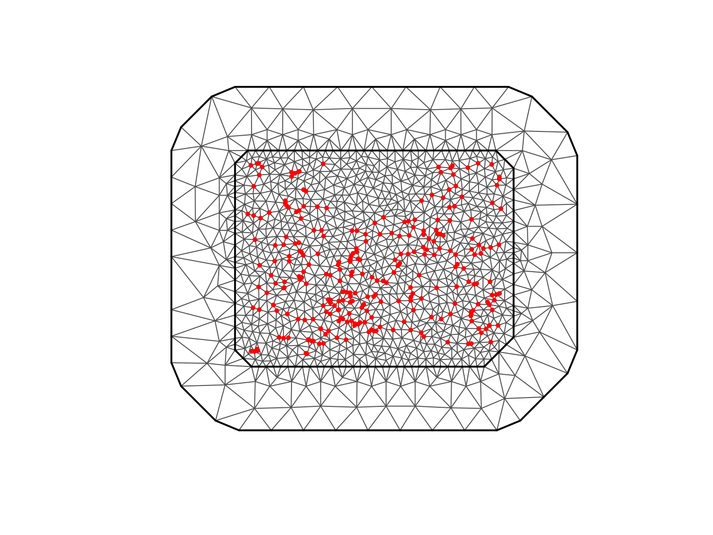
cat("Mesh vertices:", argo_mesh$n, "\n")
#> Mesh vertices: 1126The mesh provides the finite element discretization of the ocean domain.
Visualizing the Data
Let’s explore the spatial patterns in temperature and salinity:
# temperature
ggplot(data = argo_float) +
geom_point(aes(
x = loc_2d[, 1], y = loc_2d[, 2],
colour = temp
), size = 2, alpha = 1) +
scale_color_gradientn(colours = viridis(100)) +
coord_fixed() +
labs(
title = "Sea Surface Temperature (°C)",
x = "Longitude", y = "Latitude"
) +
theme_minimal()
# salinity
ggplot(data = argo_float) +
geom_point(aes(
x = loc_2d[, 1], y = loc_2d[, 2],
colour = sal
), size = 2, alpha = 1) +
scale_color_gradientn(colours = viridis(100)) +
coord_fixed() +
labs(
title = "Sea Surface Salinity (PSU)",
x = "Longitude", y = "Latitude"
) +
theme_minimal()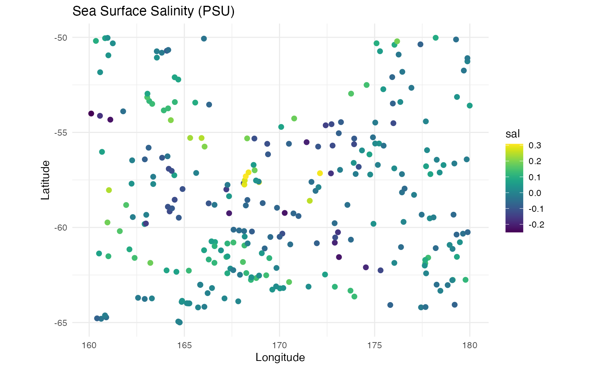
The visualizations reveal clear spatial gradients in both temperature and salinity, suggesting strong spatial structure that can be captured by the SPDE model.
Model Fitting
Next, we specify a model formula, and then fit the model:
formula <- temp ~ sal + f(
loc_2d,
model = matern(
mesh = argo_mesh
),
name = "spde",
noise = noise_nig()
)
out <- ngme(
formula = formula,
data = argo_float,
family = "nig",
control_opt = control_opt(
optimizer = precond_sgd(),
n_parallel_chain = 4,
iterations = 2000,
seed = 7,
print_check_info = FALSE
)
)
#> Starting estimation...
#>
#> Starting posterior sampling...
#> Posterior sampling done!
#> Average standard deviation of the posterior W: 0.6475549
#> Note:
#> 1. Use ngme_post_samples(..) to access the posterior samples.
#> 2. Use ngme_result(..) to access different latent models.
out
#> *** Ngme object ***
#>
#> Fixed effects:
#> (Intercept) sal
#> 0.156 8.415
#>
#> Models:
#> $spde
#> Model type: Matern
#> alpha = 2 (fixed)
#> kappa = 1.55
#> Noise type: NIG
#> Noise parameters:
#> mu = 0.692
#> sigma = 3.42
#> nu = 0.59
#>
#> Measurement noise:
#> Noise type: NIG
#> Noise parameters:
#> mu = -0.349
#> sigma = 0.0287
#> nu = 0.604The model includes:
-
Fixed effect: Salinity (
sal) as a covariate - Spatial random effect: SPDE Matérn field with NIG innovations
- Measurement error: Gaussian noise
This specification allows us to model the relationship between temperature and salinity while accounting for spatial correlation and non-Gaussian features.
Convergence Assessment
traceplot(out, "spde")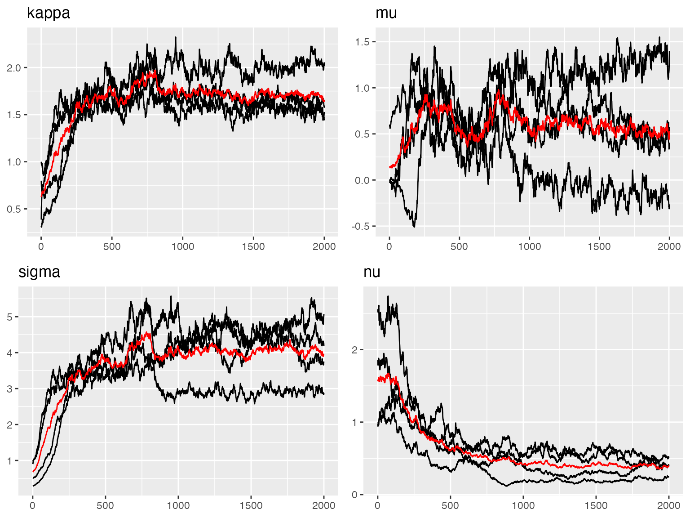
#> Last estimates:
#> $kappa
#> [1] 1.558613
#>
#> $mu
#> [1] 0.6454271
#>
#> $sigma
#> [1] 3.531973
#>
#> $nu
#> [1] 0.5250257
traceplot(out)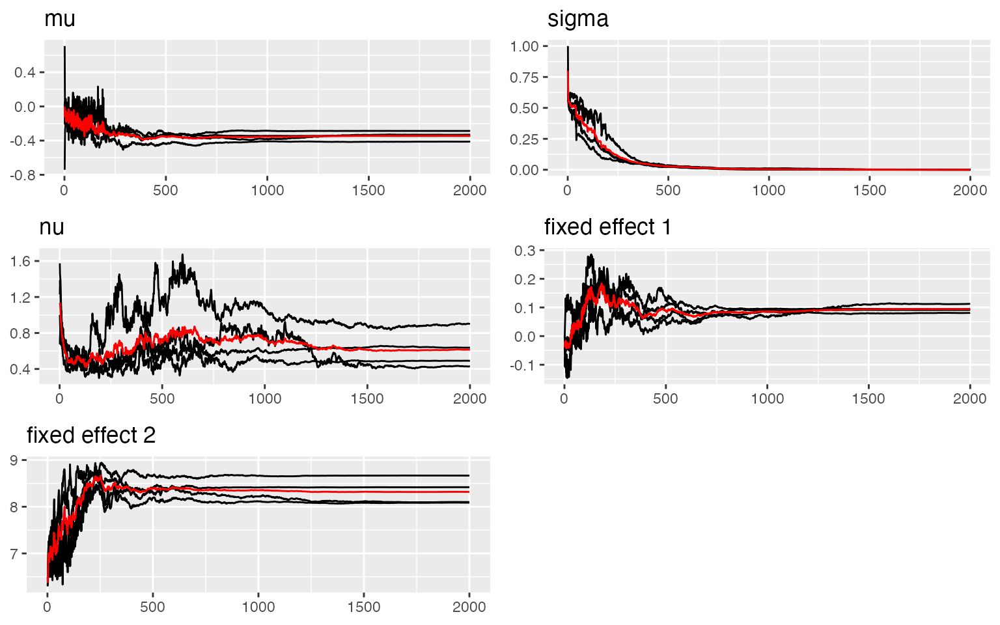
#> Last estimates:
#> $mu
#> [1] -0.3558937
#>
#> $sigma
#> [1] 0.02130491
#>
#> $nu
#> [1] 0.7029671
#>
#> $`fixed effect 1`
#> [1] 0.1450221
#>
#> $`fixed effect 2`
#> [1] 8.46145The traceplots indicate good convergence for all model parameters.
Interpreting Results
# Extract spatial field parameters
params_spde <- ngme_result(out, "spde")
cat("Spatial field parameters:\n")
#> Spatial field parameters:
cat(" Spatial scale (kappa):", round(as.numeric(params_spde$kappa), 3), "\n")
#> Spatial scale (kappa): 1.533
cat(" Correlation range:", round(sqrt(8) / as.numeric(params_spde$kappa), 3), "degrees\n")
#> Correlation range: 1.845 degrees
cat(" NIG mu:", round(as.numeric(params_spde$mu), 3), "\n")
#> NIG mu: 0.692
cat(" NIG sigma:", round(as.numeric(params_spde$sigma), 3), "\n")
#> NIG sigma: 3.419
cat(" NIG nu:", round(as.numeric(params_spde$nu), 3), "\n\n")
#> NIG nu: 0.59
# Fixed effects and measurement noise
params_data <- ngme_result(out, "data")
cat("Fixed effect (salinity):", round(as.numeric(params_data$fixed_effects), 3), "\n")
#> Fixed effect (salinity): 0.156 8.415
cat("Measurement noise:", round(as.numeric(params_data$sigma), 3), "\n")
#> Measurement noise: 0.029Key findings:
- The spatial scale indicates moderate-range spatial correlation
- The salinity effect shows how temperature changes with salinity
- NIG parameters suggest asymmetry and heavier tails than Gaussian
- The measurement noise captures observation error
Prediction
Once we have fitted the model, we can make predictions at new spatial locations for interpolation and uncertainty quantification.
Creating Prediction Grid
# Create prediction grid
lon_pred <- seq(min(argo_float$lon), max(argo_float$lon), length.out = 80)
lat_pred <- seq(min(argo_float$lat), max(argo_float$lat), length.out = 40)
pred_grid <- expand.grid(lon = lon_pred, lat = lat_pred)
# Use median salinity for predictions
pred_data <- data.frame(sal = median(argo_float$sal))
cat("Prediction locations:", nrow(pred_grid), "\n")
#> Prediction locations: 3200Making Predictions
# Generate predictions
predictions <- predict(
out,
map = list(spde = as.matrix(pred_grid)),
data = pred_data[rep(1, nrow(pred_grid)), , drop = FALSE],
type = "lp",
estimator = c("mean", "sd"),
sampling_size = 200,
seed = 123
)
# Prepare data for visualization
pred_viz <- data.frame(
lon = pred_grid$lon,
lat = pred_grid$lat,
pred_mean = predictions$mean,
pred_sd = predictions$sd
)Visualizing Predictions
# Predicted temperature map
ggplot(pred_viz, aes(x = lon, y = lat, fill = pred_mean)) +
geom_tile() +
geom_point(
data = argo_float, aes(x = lon, y = lat),
inherit.aes = FALSE, size = 0.5,
color = "white", alpha = 0.3
) +
scale_fill_viridis(option = "plasma") +
coord_fixed() +
labs(
title = "Predicted Sea Surface Temperature",
subtitle = "White points: observation locations",
x = "Longitude",
y = "Latitude",
fill = "Temp (°C)"
) +
theme_minimal() +
theme(
plot.title = element_text(size = 12, face = "bold"),
legend.position = "right"
)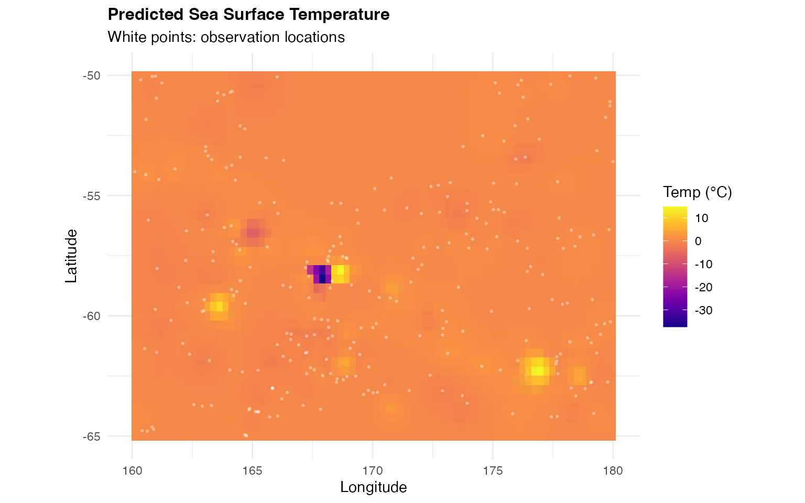
# Prediction uncertainty map
ggplot(pred_viz, aes(x = lon, y = lat, fill = pred_sd)) +
geom_tile() +
geom_point(
data = argo_float, aes(x = lon, y = lat),
inherit.aes = FALSE, size = 0.5,
color = "black", alpha = 0.3
) +
scale_fill_viridis(option = "magma") +
coord_fixed() +
labs(
title = "Prediction Uncertainty (SD)",
subtitle = "Black points: observation locations",
x = "Longitude",
y = "Latitude",
fill = "SD"
) +
theme_minimal() +
theme(
plot.title = element_text(size = 12, face = "bold"),
legend.position = "right"
)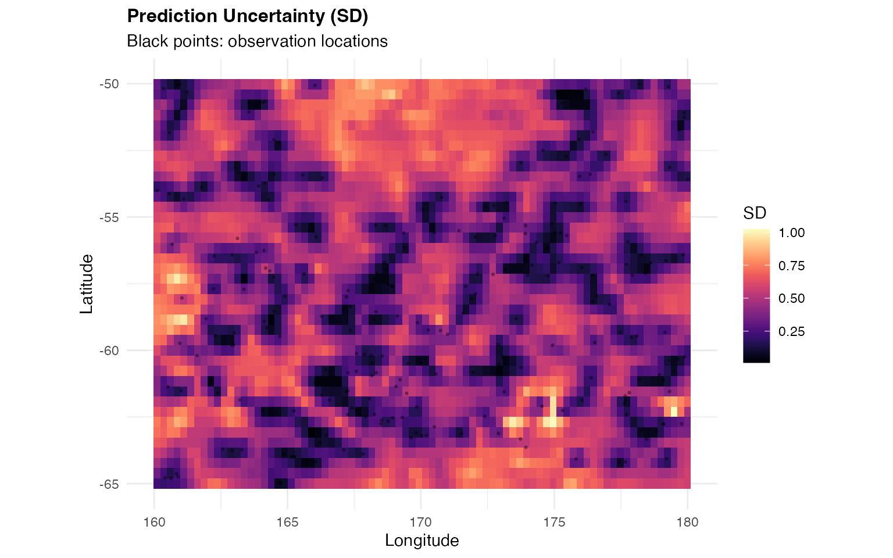
Interpretation:
- The prediction map shows smooth spatial interpolation of temperature
- Higher uncertainty appears in regions with sparse observations
- The SPDE model successfully captures spatial structure
- Uncertainty quantification helps identify areas needing more data
Advanced Topics
Non-Stationary SPDE Matérn Model
Motivation for Non-Stationarity
In many real-world applications, spatial correlation properties vary across the domain. For example:
- Oceanography: Correlation ranges differ between coastal and open ocean regions
-
Meteorology: Temperature correlations vary with
elevation and topography
- Epidemiology: Disease spread patterns differ between urban and rural areas
- Ecology: Species abundance correlations change with habitat heterogeneity
The ngme2 package supports non-stationary models where the spatial scale parameter varies spatially, allowing for location-dependent correlation ranges.
Mathematical Formulation
In the stationary case, we have , where is constant across space.
For non-stationary models, we allow to vary spatially:
where are location-specific values at mesh vertices.
We model the spatial variation through basis functions:
where:
-
is an
matrix of basis functions evaluated at mesh vertices (specified via
B_theta_Kparameter) -
is a
-dimensional
vector of coefficients to be estimated (specified via
theta_Kparameter)
Simulating Non-Stationary Data
Let’s create a synthetic example where correlation range varies with longitude:
library(ngme2)
library(ggplot2)
library(viridis)
library(fmesher)
# Create a rectangular domain
pl01 <- cbind(c(0, 1, 1, 0, 0) * 10, c(0, 0, 1, 1, 0) * 5)
mesh <- fm_mesh_2d(
loc.domain = pl01,
cutoff = 0.1,
max.edge = c(0.3, 1.5)
)
cat("Mesh vertices:", mesh$n, "\n")
#> Mesh vertices: 2171
# Visualize mesh
plot(mesh, main = "Mesh for Non-Stationary Example")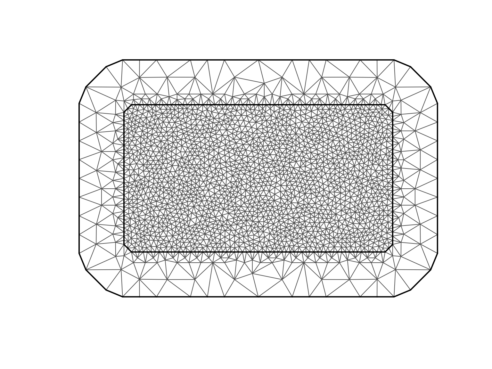
Now we’ll create basis functions that capture spatial variation in :
# Create basis matrix for kappa
# We want kappa to vary with longitude (x-coordinate)
mesh_coords <- mesh$loc[, 1:2]
# Polynomial basis: 1, x, x^2
# NOTE: We create this as B_kappa for clarity, but will pass it as B_theta_K to ngme2
B_kappa <- cbind(
Intercept = 1,
Longitude = mesh_coords[, 1] / 10, # Normalized to [0,1]
Long_squared = (mesh_coords[, 1] / 10)^2
)
# True coefficients: log(kappa) = 0.5 + 1.5*x - 0.8*x^2
# This creates higher kappa (shorter range) in middle, lower at edges
true_theta <- c(0.5, 1.5, -0.8)
# Compute true kappa at each mesh vertex
log_kappa_true <- B_kappa %*% true_theta
kappa_true <- exp(as.vector(log_kappa_true))
# Visualize the true spatial variation in kappa
kappa_df <- data.frame(
x = mesh_coords[, 1],
y = mesh_coords[, 2],
kappa = kappa_true,
range = sqrt(8) / kappa_true # Practical range
)
ggplot(kappa_df, aes(x = x, y = y, color = kappa)) +
geom_point(size = 2, alpha = 0.7) +
scale_color_viridis(option = "plasma") +
coord_fixed() +
labs(
title = "True Spatial Variation in κ",
subtitle = "log(κ) = 0.5 + 1.5x - 0.8x²",
x = "Longitude",
y = "Latitude",
color = "κ value"
) +
theme_minimal()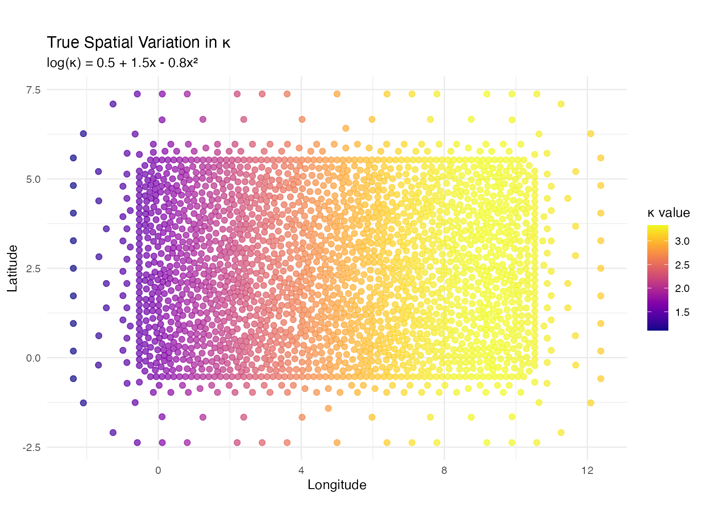
ggplot(kappa_df, aes(x = x, y = y, color = range)) +
geom_point(size = 2, alpha = 0.7) +
scale_color_viridis(option = "viridis") +
coord_fixed() +
labs(
title = "True Correlation Range Variation",
subtitle = "Range = √8/κ",
x = "Longitude",
y = "Latitude",
color = "Range"
) +
theme_minimal()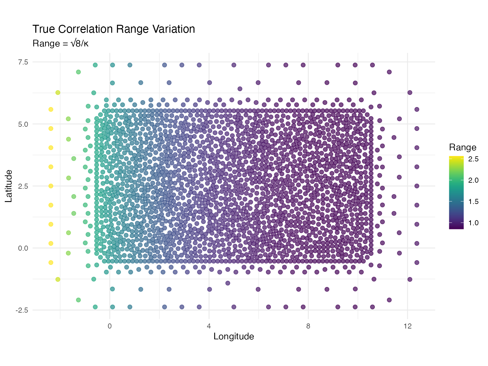
# Summary statistics of spatial variation
cat("Kappa statistics:\n")
#> Kappa statistics:
cat(" Min:", round(min(kappa_true), 3), "\n")
#> Min: 1.104
cat(" Mean:", round(mean(kappa_true), 3), "\n")
#> Mean: 2.676
cat(" Max:", round(max(kappa_true), 3), "\n\n")
#> Max: 3.331
cat("Correlation range statistics:\n")
#> Correlation range statistics:
cat(" Min:", round(min(kappa_df$range), 3), "\n")
#> Min: 0.849
cat(" Mean:", round(mean(kappa_df$range), 3), "\n")
#> Mean: 1.129
cat(" Max:", round(max(kappa_df$range), 3), "\n")
#> Max: 2.563Simulating Observations
# Generate observation locations
set.seed(123)
n_obs <- 800
loc_obs <- cbind(
runif(n_obs, 0, 10),
runif(n_obs, 0, 5)
)
# Define the non-stationary model for simulation
true_noise <- noise_nig(mu = -1.5, sigma = 1, nu = 0.5)
true_model <- f(
map = loc_obs,
model = matern(
mesh = mesh,
B_kappa = B_kappa
),
noise = true_noise
)
# Simulate the spatial field
W <- simulate(true_model, seed = 456)[[1]]
# Add measurement noise
sigma_obs <- 0.3
Y <- W + rnorm(n_obs, sd = sigma_obs)
# Visualize simulated field
sim_df <- data.frame(
x = loc_obs[, 1],
y = loc_obs[, 2],
W = W,
Y = Y
)
ggplot(sim_df, aes(x = x, y = y, color = W)) +
geom_point(size = 2, alpha = 0.8) +
scale_color_viridis(option = "plasma") +
coord_fixed() +
labs(
title = "Simulated Non-Stationary Matérn Field",
subtitle = "Spatial correlation range varies with longitude",
x = "Longitude",
y = "Latitude",
color = "Field Value"
) +
theme_minimal()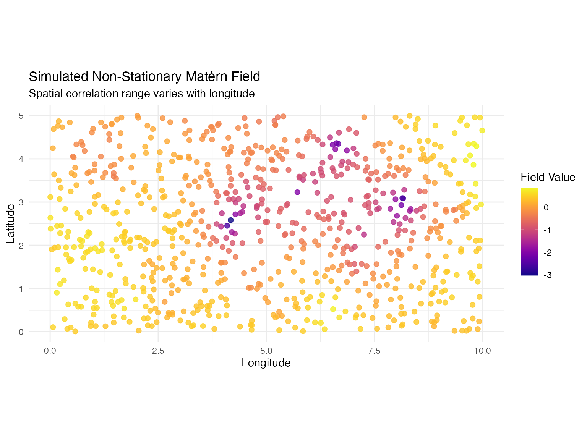
Fitting the Non-Stationary Model
Now we fit both stationary and non-stationary models to compare:
# Fit NON-STATIONARY model
fit_nonstat <- ngme(
Y ~ 0 + f(
loc_obs,
model = matern(
mesh = mesh,
B_kappa = B_kappa
),
name = "spde_nonstat",
noise = noise_nig()
),
data = data.frame(Y = Y),
control_opt = control_opt(
iterations = 2000,
optimizer = precond_sgd(),
n_parallel_chain = 4,
std_lim = 0.01,
seed = 789
)
)
#> Starting estimation...
#>
#> Starting posterior sampling...
#> Posterior sampling done!
#> Average standard deviation of the posterior W: 0.5756689
#> Note:
#> 1. Use ngme_post_samples(..) to access the posterior samples.
#> 2. Use ngme_result(..) to access different latent models.
# Display results
cat("=== NON-STATIONARY MODEL ===\n")
#> === NON-STATIONARY MODEL ===
print(fit_nonstat)
#> *** Ngme object ***
#>
#> Fixed effects:
#> None
#>
#> Models:
#> $spde_nonstat
#> Model type: Matern
#> alpha = 2 (fixed)
#> theta_kappa = 0.0899, 0.1291, -0.4768
#> Noise type: NIG
#> Noise parameters:
#> mu = -1.9
#> sigma = 0.345
#> nu = 0.924
#>
#> Measurement noise:
#> Noise type: NORMAL
#> Noise parameters:
#> sigma = 0.288This enables modeling of phenomena where correlation range varies with environmental gradients, depth, topography, or other spatially varying factors.